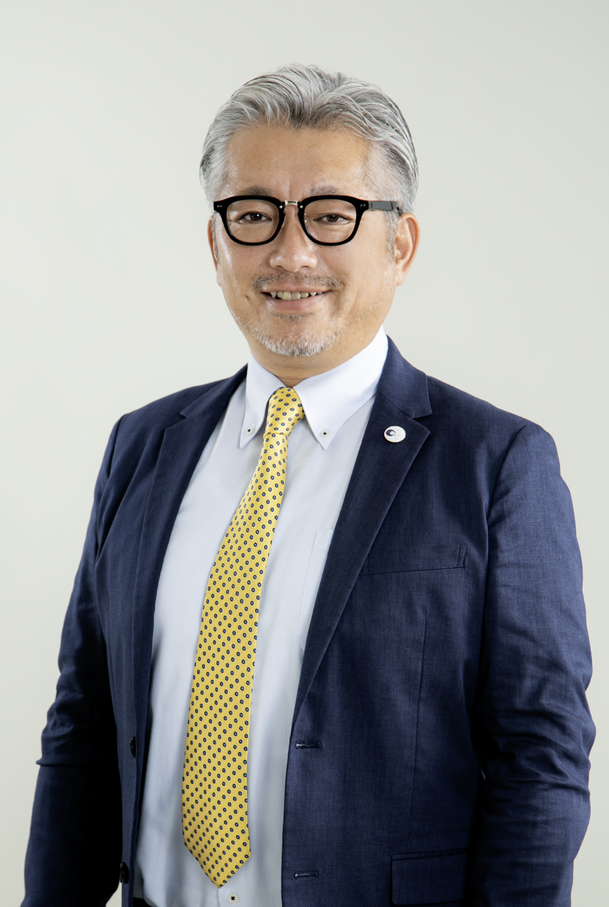

皆さん、初めまして。
コ・ソーシングにより包括的な組織開発・人財育成の伴走型支援を主業とする暁月（あかつき）の代表理事を務める笠原秀寛です。
暁月では〈喜努愛楽スピリット〉というパーパスを掲げています。
私は、この言葉を胸に、常にクライアントの皆さまに寄り添い、目標達成まで共に伴走していくことを考え続けています。
情報インフラの進化やイノベーションの多様化が進む中、それを扱う人間が孤立や分断の危機にさらされています。
人間関係の基盤であるコミュニケーションのあり方が変容した今、経営者と社員の想いがひとつになるような、新しい組織と人事が求められているとも言えます。
「孤立」から「信頼」へ、「伝わらない」から「伝わる」へ。
組織を変革し、主体的に相手を思いやりながら行動できる人財を育て、ヒューマンリソースの最大化を支援することが、私たちの使命です。
暁月をどうぞよろしくお願い申し上げます。
暁月の存在意義は、包括的な組織開発・人財育成の伴走型支援のコ・ソーシングにより、「組織と人」の可能性を最大限に引き出すことです。私たちは、経営者と共に未来を描き、社員の意欲や不安を受け止め、個人と企業が共に繁栄する持続可能な社会を目指します。
暁月のビジョンは、社員が「キャリアの転機」を迎えても、安心して成長を続けられるような支援体制を企業文化として根付かせることです。不要な離職やミスマッチのない組織を育み、経営者も未来を見据えた成長戦略を描けるような環境づくりを支援します。
暁月のミッションは、キャリアコンサルタントやコーチングのリソースを活かし、人財の成長と定着を同時に実現することです。「組織と人」の可能性を最大限に引き出し、持続可能な成長を支援し続けます。